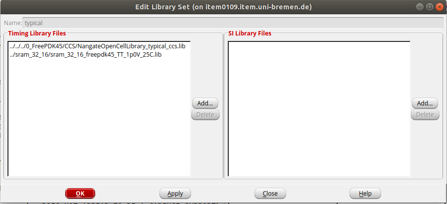

Tutorial IC Design Place and Route
Table of Contents
1. Place & Route design flow
1.1. Goals
This tutorial aims to explain the physical design in more detail. In this tutorial, the physical design is developed for a small single-core RISC-V SoC called PULPino.
You are going to exercise the following steps:
- Floorplanning
- Placement
- Clock Tree Synthesis
- Routing
- Verification
The general view of the flow is shown in the following picture:
1.2. Orginize your data and setup the tool
Before you start, it is a good idea to organize your data by creating a set of directories where you will put the data generated during the design flow.
Go to the directory of pulpino_soc and create the following directories:
cd pulpino_soc/do_pr mkdir results mkdir reports mkdir cmd mkdir log mkdir tool
For the lab, you are going to use the INNOVUS tools from Cadence.
Create a sourceme.csh file to do the setup and copy the following commands into your file.
setenv LM_LICENSE_FILE "28211@item0096" source /eda/cadence/2017-18/scripts/INNOVUS_17.11.000_RHELx86.csh
Now you can source that file.
source sourceme.csh
And then, you can start the tool
innovus -log log/

2. Design import
To move from logical to physical design you need to:
- Define the design (.v)
- Define design constraints (.sdc)
- Define operating conditions (MMMC)
- Define technology and libraries (.lef , .lib)
In order to provide the tool with the inputs, in the menu execute File → Import Design

You have to select the gate-level Verilog file of your design to read and then specify the name of the top cell, pulpino_top is the name of top cell.
In addition, you have to set the LEF files of the standard cell library and Macros(the memory cell). The LEF file (Library Exchange Format) contains information on available metal layers, Via information, design rules, and the geometry of each cell.
After that, you need to define the power nets of your design, i.e., VDD and VSS. In the Analysis Configuration part, you will set the timing libraries and constraints either by importing an MMMC (Multi-Mode Multi-Corner) view file or by clicking on Create Analysis Configuration ...
Click on Create Analysis Configuration ....
In the MMMC objects section, you can set different operating conditions. You should at least provide software with a timing library and set a
delay corner using the appropriate library:
Here, click on library Sets to add timing libraries.
Choose a name, e.g., typical, and add a typical corner library of the standard cells and a timing library for the memory with .lib extension.

In Analysis View Section, you can set an analysis based on the corner and constraints you are willing to use.
As you can see, different views can be set for Setup and Hold analysis. After selecting the timing libraries and constraint file (.sdf), click on Save&Close
to save all settings in a .view file.
Alternatively, you can execute the following Tcl commands:
set init_lef_file {../../../0_FreePDK45/LEF/NangateOpenCellLibrary.lef ../sram_32_16/sram_32_16_freepdk45.lef}
set init_gnd_net VSS
set init_pwr_net VDD
set init_verilog ../gate/pulpino_top_nangate45.v
set init_top_cell pulpino_top
set init_mmmc_file Default.view
init_design
The .view file can be automatically generated as follows:
# Version:1.0 MMMC View Definition File
# Do Not Remove Above Line
create_library_set -name typical -timing {../../../0_FreePDK45/CCS/NangateOpenCellLibrary_typical_ccs.lib ../sram_32_16/sram_32_16_freepdk45_TT_1p0V_25C.lib}
create_constraint_mode -name myconstraints -sdc_files {../gate/pulpino_top_nangate45.sdc}
create_delay_corner -name default -library_set {typical}
create_analysis_view -name ana1 -constraint_mode {myconstraints} -delay_corner {default}
set_analysis_view -setup {ana1} -hold {ana1}
3. Floorplan
3.1. Specify the floorplan
In this step, you should define your unit's floorplan size, aspect ratio, and target utilization.
In the menu select Floorplan → Specify floorplan.
For example, you can select that the design should have an aspect ratio of 1, a core utilization of 70% and a core to io boundary distance of 20 μ m in all the directions. Aspect Ratio defines the chip's core dimensions as the ratio of the height divided by the width. Core Utilization determines the core and module sizes by total standard cells and macros density.
Alternatively, you can execute in the Tcl terminal:
floorPlan -r 1 0.7 20.0 20.0 20.0 20.0
3.2. Hard macro placement
You can place the macros using the Move/resize/reshape (alternatively, you can use: Shift + R) from the menu. First, change the view to the floorplan view from the right side of the program window, as it is shown in the picture below with a red dot:
Then, select macros using your mouse and place them freely on your floorplan. It would be best to consider impacts on routing, timing, power, and particularly the position of the pins when placing large macros. It would help if you usually pushed them to the sides of the floorplan.
After roughly placing the macros, macro placement should be legalized by choosing Floorplan → snap Floorplan.
3.3. Power rings
Often rings for VDD and GND are placed around the chip periphery and each hard IP.
In the next step, we add the powerrings around the core boundary. In the menu select Power → Power Planning → Add Ring.
Alternatively, you can execute in the Tcl terminal:
addRing -nets {VDD VSS} -follow core -stacked_via_top_layer metal10 -stacked_via_bottom_layer metal1 -layer {bottom metal5 top metal5 right metal6 left metal6} -width 4 -spacing 2
3.4. Pin assignment
Location of pins can be set with Edit → Pin editor. You can choose the pins and the side of
the floorplan in which pins should be located.
For example, you can select the uart pins and place them on the Top side of the floorplan on metal 3. A 10 μ spacing
is considered between pins.
Alternatively, you can execute in the Tcl terminal:
editPin -fixOverlap 1 -unit MICRON -spreadDirection clockwise -side Right -layer 3 -spreadType start -spacing 10 -start 0.0 0.0 -pin {uart_cts uart_dsr uart_dtr uart_rts uart_rx uart_tx}
Here, you can see the layout after the macro placement, power rings and pin edditing:
4. Placement
4.1. Standard cell placement
Now we can place the cells. In the menu slect Place → Place standard cells.
Deselect the Include Pre-Place Optimization and click in Mode... to select additional options.
In the new window you should select Place IO Pins.

The equvallent Tcl command is as follows:
setPlaceMode -placeIOPins 1 placeDesign -noPrePlaceOpt
4.2. Spare cell placement
Sometimes not everything works properly after tape-out. Spare cells are basic elements embedded in the design
which are not driving anything. The idea is that maybe they will enable an easy fix without
the need for a full redesign. In order to add some spare cells choose place → Place Spare Cell ....
You can select some cells from the cell list and name the module.
Alternatively you can execute in the tcl terminal:
createSpareModule -moduleName my_spare -cell {AOI222_X4 1 BUF_X1 2 DFF_X1 5}
Now, you can instantiates a created spare module, and places spare modules across the design.
placeSpareModule -moduleName my_spare -stepx 50 -stepy 50 -offsetx 5 -offsety 5
At this point, you can generates a timing report that provides information about the various paths in the design.
report_timing > reports/timing_report_postPlace.rpt
Use report_timing -help to see the different options associated with this command.
5. Clock tree synthesis
So far, we have designed a floor plan for physical implementation and provided a location for every gate. But, until now, we have assumed an ideal clock. Therefore, we have to provide all sequential elements with a real clock signal in this step.
Clock net has a significant impact on timing, power, area, etc. Therefore, we do not route the clock net to all sequential elements like any other net.
Clock Tree Synthesis (CTS) can automatically generate a clock tree specification from multi-mode timing constraints and then synthesize and balance clock trees to that specification. CCOpt (Concurrent clock optimization) tool extends CTS by simultaneously optimizing clock and datapath to achieve better performance, area, and power.
Typically, the default routing guideline for routing is provided by LEF files. However, we would like to provide more width and spacing for routing special nets like clock nets. For that, we use Non-Default-Rules (NDR).
In this case, clock nets have better signal integrity and lesser crosstalk and noise. Therefore, applying double width and spacing on all clock nets is recommended. Generally, it is not easy to respect the NDR in metal 1.
Therefore, designers can define NDR from metal 2. However, you should be aware of the negative impacts of NDR width and spacing increment on the area of the chip.
Please use the following Tcl commands to set the NDR:
add_ndr -name default_2x_space -spacing {metal1 0.38 metal2:metal5 0.42 metal6 0.84}
create_route_type -name leaf_rule -non_default_rule default_2x_space -top_preferred_layer metal4 -bottom_preferred_layer metal2
create_route_type -name trunk_rule -non_default_rule default_2x_space -top_preferred_layer metal4 -bottom_preferred_layer metal2 -shield_net VSS -shield_side both_side
create_route_type -name top_rule -non_default_rule default_2x_space -top_preferred_layer metal4 -bottom_preferred_layer metal2 -shield_net VSS -shield_side both_side
set_ccopt_property route_type -net_type leaf leaf_rule
set_ccopt_property route_type -net_type trunk trunk_rule
set_ccopt_property route_type -net_type top top_rule
using the setDesignMode command you can specify a process technology value.
Setting the process technology leads to a more accurate RC extraction.
setDesignMode -process 45
Then, we set a target maximum transition time and a target skew:
set_ccopt_property target_max_trans 0.08 set_ccopt_property target_skew 0.5
We also have to set the buffer and inverter cells from the standard cell library using in the clock tree:
set_ccopt_property buffer_cells {BUF_X1 BUF_X2 BUF_X4 BUF_X8 BUF_X16 CLKBUF_X1 CLKBUF_X2}
set_ccopt_property inverter_cells {INV_X1 INV_X2 INV_X4 INV_X8 INV_X16}
Finally, we create a clock tree specification from active timing constraints using create_ccopt_clock_tree_spec and build the clock tree.
The following commands route clock nets automatically.
create_ccopt_clock_tree_spec -file ./results/ctsspec.tcl source ./results/ctsspec.tcl ccopt_design
Reports on clock trees and skew groups can be obtained using these CCOpt reporting commands:
report_ccopt_clock_trees –file reports/clock_trees.rpt report_ccopt_skew_groups –file reports/skew_groups.rpt
After the clock tree optimization, we report the timing of the design:
report_timing > reports/timing_report_postCCopt.rpt
Compare two timing reports before and after the clock tree synthesis.
6. Route the design
After the placement and clock tree synthesis, we can route the nets. In the menu select Route → Nano route → Route.
Alternatively, you can execute the following tcl command.
routeDesign -globalDetail
7. Filler cell placement
You should insert filler cells to fill the holes in the rows. However, it should usually done after routing and clock tree synthesis in order to prevent congestion problem.
In the menu select Place → Physical cells → Filler cells.
Click in Select and select all the filler cells, then click ok.

Alternatively, you can execute the following tcl command.
setFillerMode -add_fillers_with_drc false addFiller -cell FILLCELL_X8 FILLCELL_X4 FILLCELL_X2 FILLCELL_X1 -prefix FILLER -fixDRC
8. Verify and write result
You can check that your design does not have errors. In the tcl terminal type:
verify_drc -limit 100000 -report reports/pulpino_soc.drc verify_connectivity -report reports/pulpino_soc.connect
You can as well choose verify → verify DRC ... from the menu.
One of the techniques to address the routing violation is to delete the routing of the nets with violations and re-route them. If you have DRCs, do the followings:
editDeleteViolations routeDesign verify_drc -limit 10000
You might expect an impact on the timing of your designs as some of the wires are re-routed.
When you are satisfied with your design, you can save your design:
saveDesign ./results/postRoute.enc
You can read design using:
source ./results/postRoute.enc
The following command selects the fastest postRoute extraction engine.
The extractRC command extracts resistance and capacitance for the interconnects and stores the results in an RC database.
The extractRC command can be followed by the rcOut command to extract the parasitics from the RC database,
and to generate an ASCII report containing the database information.and save the extracted RC in a file:
setExtractRCMode -engine postRoute -effortLevel low extractRC rcOut -spef fe_extended.spef
Now you can export your design into a gds file. File → Save → GDS/Oasis.
Alternatively, you can execute the following tcl command.
streamOut results/pulpino_soc.gds -mapFile streamOut.map -libName my_library -units 2000 -mode ALL